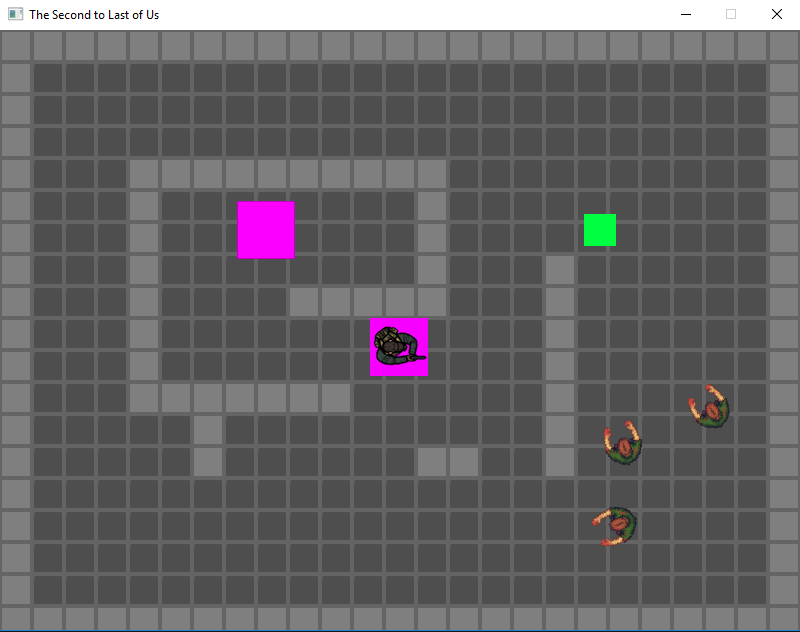

University Projects
While at the Auckland University of Technology I took part in the Game Programming paper. This paper presented me with the opportunity to learn coding in C++ and learn the fundamentals of game programming from an industry professional. These two games are examples of my first venture into game programming and C++ in general. Taking part in the Game Programming paper was a great opportunity through which I learnt a lot. I look forward to improving upon the skills I have gained to date. A basic framework was provided to students to act as a starting code platform for these projects. The framework only provided a basic structure with many missing code sections for students to fill in while building their games. This framework is hosted by AUT and therefor only accessible by students (AUT, n.d.).
Individual Game Project
Smash n' Dash
Smash n' Dash was an individual project where I first got to stretch my legs with coding a full game in C++ from conception to gold build. I learnt a lot. My key lesson here being the importance of tracking memory leaks from the start. I impleneted Visual Leak Detector later in the project but was unable to resolve all of my leaks before the deadline. Box2D was also used for the first time. I later found that I had made an error in the placement of my Box2D bodies. Box2D uses positioning off of a central point, whereas our SDL sprites and the like anchor to the top left. This had no impact on my game as all sprites were the same size and therefore offset with their physics body by the same margin.
Links

Team Game Project
The Second to Last of Us
The Second to Last of Us allowed me to improve upon what I had learnt during production of Smash n' Dash. I'm proud to say that memory leaks have been kept at a solid 0! While they pop up from time to time when something new is implemented. They are always dealt with immediately. Box2D position was also factored in correctly. Game assets are of different sizes and not always a magic number. Therefore they would have been noticably broken if implemented in the incorrect manner that was used in Smash n' Dash. One of the larger challenges faced during production was the implementation of a scrollable level. This was resolved by creating a "playable" bounds region on the center of the screen that player movement was limited too. If the player's movement had them leave the region of this playable bounds, the player position would instead be reset back slightly within bounds and level and all of the assets within it would be moved instead. I am still uncertain about the efficiency of this method and given the opportunity I would like to revisit the method to see what improvements could be made. Moving the renderable region of the screen as you would a camera would be preferable.
Links
- Download - The Second to Last of US (Frewen, Hoon Jho, & Pike, n.d.)
- Github Source Code - The Second to Last of Us (Frewen, Hoon Jho, & Pike, n.d.)
- GDD - The Second to Last of Us (Frewen, Hoon Jho, & Pike, n.d.)
- TDD - The Second to Last of Us (Frewen, Hoon Jho, & Pike, n.d.)
